Uplifting progressive politicals to the masses in digital spaces in the 2019 Philippine midterms, impacting millions of Filipinos with a team of 25.
Conceptualized and oversaw the product/project: designing our identity and majority of graphics, led interview/research efforts, and engineered the bulk of the site. Timeline The bulk of Iboto.ph was built in 3 weeks over April—May 2019, maintained to support candidates in the weeks after. Visit On Iboto.ph and our social sites Facebook, and Medium

Context
Advocating for progressives in the Philippine midterms
This was a key election. May 13, 2019 would mark the midterm of President Rodrigo Duterte—with it, key senatorial, party list, and local positions contested. Progressive candidates with limited funds for on-the-ground campaigning were easily lagging behind in polls and surveys. To many Filipinos, the election is inexpendable: it's a matter of life or death. To argue otherwise is privileged and ignorant of longstanding institutions that propagate hardship in our communities.
In the months preceding the election, I began brainstorming on how might we propel voter education to the masses. I kickstarted an ambitious project: to level the political playing field and empower voters with modern tools. I was thinking closely about social media: 76 million social media users (71% penetration) in the Philippines.
Who were Filipinos betting on?
From senatorial candidate surveys, a majority of candidates from the slate of 12 had low visibility or awareness. Voters didn't even know who their choices were!
Political surveys and media were buzzing with conversation in the weeks and months preceding the May elections.
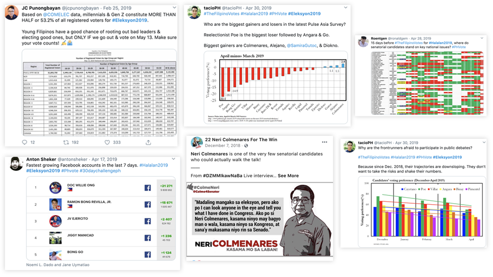
With an idea brewing from my observations of the electoral race, I sought to learn more about how the electorate thinks.
Surveys
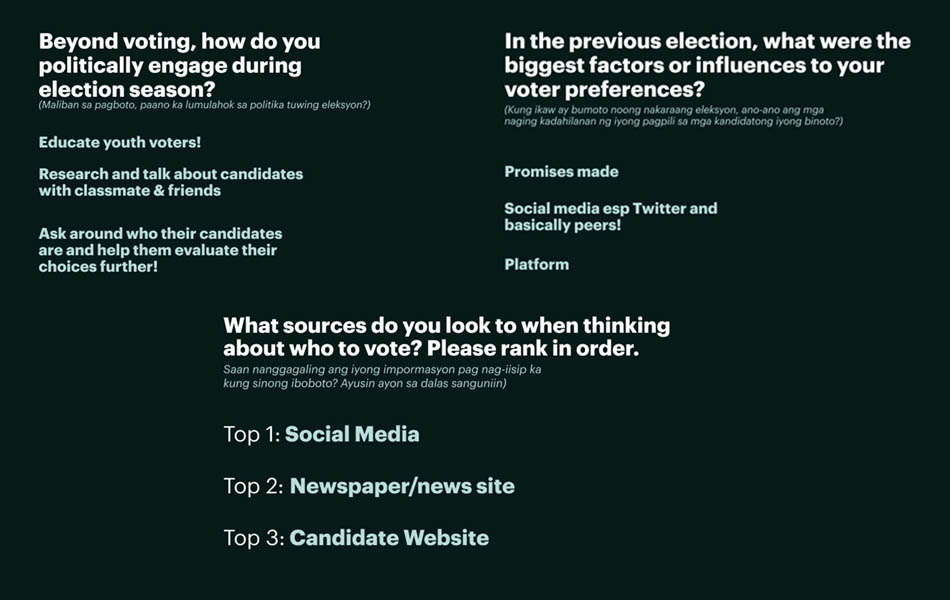 A selection of questions we asked in candidate surveysProto-Personas
While continuing inquiry, we developed proto-personas to guide us through the headspace of our target audiences. We assumed that existing supporters would seek to spread awareness, and undecided voters would seek information.
PERSONA: UNDECIDED, LEARN
Juan
Broad C or B class; active on social media and is engaging with political discussion. Strong values, poll choices are still incomplete. Online daily (on mobile, or at computer shops) and frequently receives news on Facebook light or television first. Shares political posts on their feed and/or with peers.
Juan has voted nearly ever election, interfaces with his local barangay, and discusses politics with his family and over drinks with his friends. Despite this, he's still uncertain about national politics beyond what he reads of the presidency and on top headlines. Juan is a bit stubborn and cemented in his beliefs.
- Needs to accomplish—comment on political activity, be informed of political activity
- Needs to feel—understood: their thoughts and political views are being upheld
- Considerations—what's the easiest way to deliver long-lasting information to them? When/how do they share information, and with whom?
PERSONA: GENERALLY DECIDED, SPREAD AWARENESS
Joanna
Joanna registered to vote for the first time this election, yet has been politically aware for years from her high school and early college experience. She's looking to solidify her voting slate, even willing to take in information til the last minute.
empowered and engaged: that they're participating in fruitful discussions
Auditing the Voter Education Landscape
To better understand where voters go to, we looked into common sources reported to be used by the electorate and what was available in them.
Understanding the landscape coupled with points from our voters helped us scope out gaps in today's resources. This is a prettified summary of others in the landscape: we kept up a sheet of competitors, loves, dislikes, and any contacts we had at their spaces.
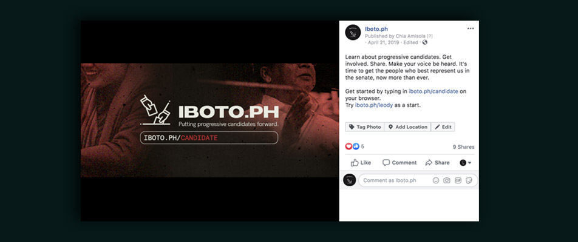Focusing on progressive candidates
Getting a sense of the digital electoral landscape and voter profile helped us realize something key: progressive, left-leaning candidates did not have social presences.
In its inception, the vision for Iboto.ph was to be a database for all candidates, but we learned that this may not be the right angle.
Instead of being an all-around platform, the team decided to publish pages solely for progressive candidates to specifically forward and act as a unique network collating these candidates together. They frequently have smaller campaign teams and budgets compared to other candidates. We wanted to drive our efforts into upholding them as opposed to having mixed content. Supporters and dissenters alike could use our page to inform them directly of these candidates and the work we believe they're doing well and right.
This decision would then pave the usage we would imagine for the tool, as well as how we would position and distribute ourselves.
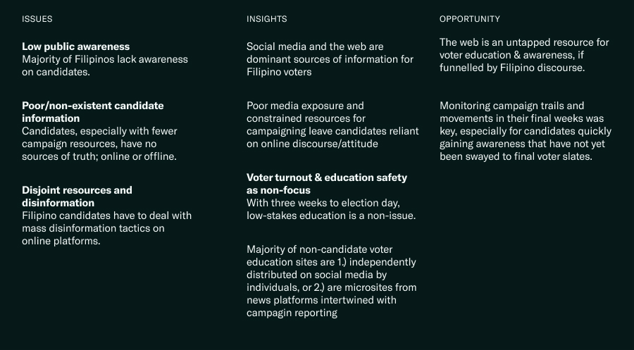
Problem Identification
In clarifying and synthesizing these problems, we identified issues, insights, and opportunities in the electoral landscape directly preceeding the 2019 midterms.
Low public awareness
For majority of the candiadtes we were looking to support: awareness was a number one issue. Even progressive voters were not familiar with left-leaning candiates (especially in a senator race).
Poor/non-existent candidate information
Underresourced candidates have little capacity to distribute information offline (websites, social media, advertising) or online (on-the-ground campagins).
Disjoint resources & disinformation
"Fake news" isn't only an issue of ignorance, it's furthered by manipulation.
Understanding these major gaps and opportunities set the groundwork; it was time to build.
Driving political discourse
We then worked to build a digital means for Filipino voters to be informed of progressive candidates, driving political discourse.
Initially, we started out with a website. Iboto.ph then heavily used social media to disseminate information and engage with voters, with a website as a primary tool.
How might we educate voters about progressives in the dominant space for political discussion?
Our key assumption while building: voters are looking to actively learn, and have changeable minds.
Our marketing and language would then target demographics of active, online users who were still undecided in their voting slate or receptive to change.
Journey Mapping
Next, our goal was to put ourselves in the place of the Filipino voter. We clarified intentions and desired through a journey map, guided by our developing personas.
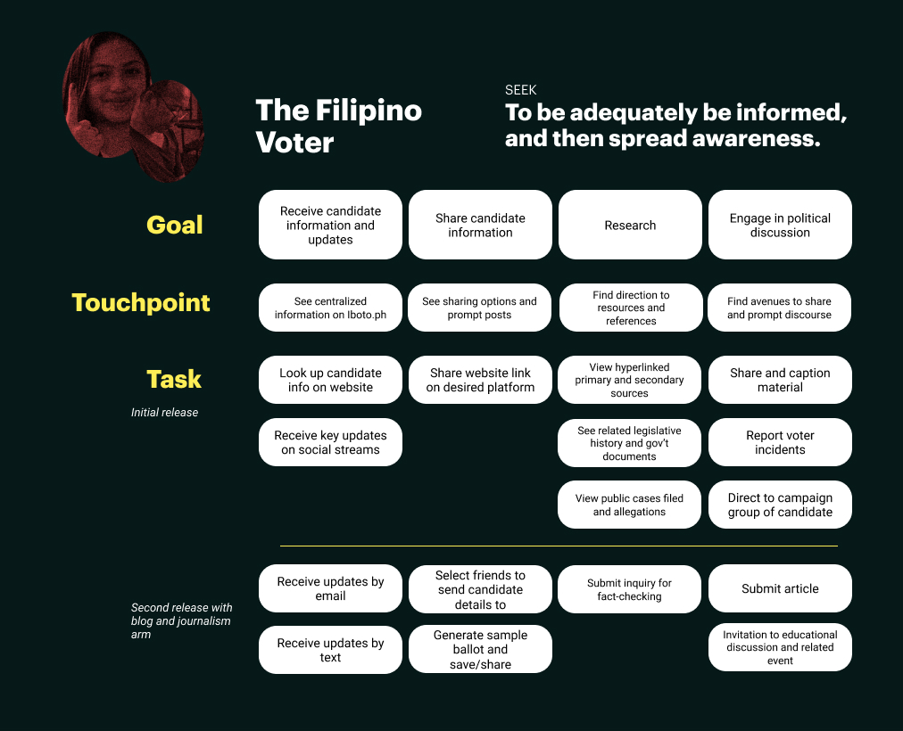Understanding these actions and the nuances in user needs and considerations helped us move forward.
Our product would be a voter education website complemented by campaigns on social media platforms, centralizing information about senatorial candidates.
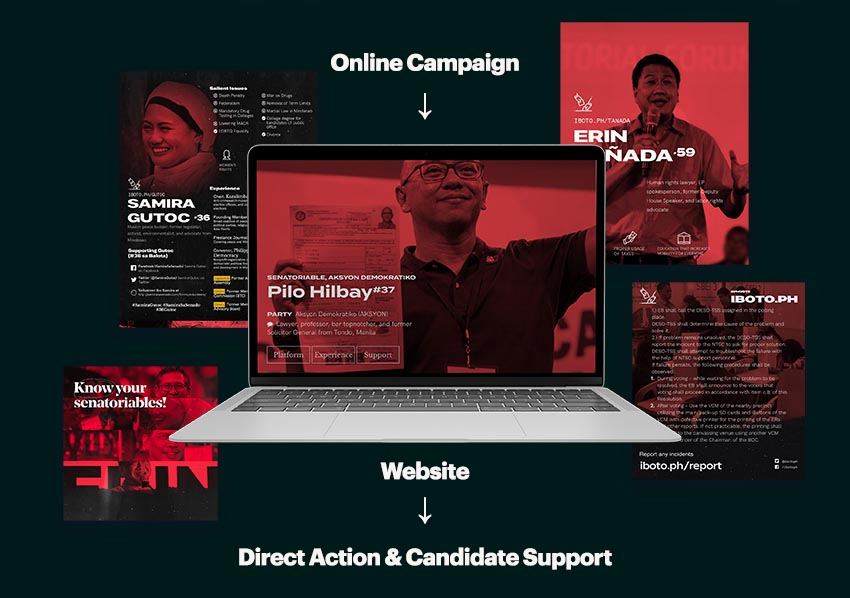
Inquiry
Elections for the online Filipino
Design Rationale
From similar sites (largely news websites), we wanted to establish a sense of identity that mixed formal elements with progressive, loud, and bold symbols.
Ethical Design—I guided my team's flow by sharing ethical design principles as we built for a majority market. Focusing on human rights: reducing inequality to access to information, then easing human effort: respecting functional, convenient, and reliable designs, and then creating for a delightful experience were key to our process.
Other readings were Jesse Weaver's "It's Time for Digital Products to Start Empowering Us" and Davey Alba's writing on the weaponization of social media by the Duterte administration.
Identity
Iboto.ph means "to vote" in Tagalog, emphasizing our brand's forwardness.
National Brand—we needed a strong, consistent identity that made it clear we were here to politically engage. Our palette uses accent colors (and a main red) borrowed from the Philippine flag. These components and mateiral were reused throughout the project.
Product Explorations
Guided mainly by our uncovered touchpoints, we explored what resources and tools we could build for Iboto.ph.
Value sharing—After getting a better sense of actual use cases, we understood that from now on—the point of expansion was to convert, and engage people with candidates who hold aligned values. Recall, we constrained our selection from our initial goal of displaying voter information for all, making an intentional choice to serve more overlooked candidates with shared values.
Synthesis
After we determined key offerings and gaps for voters, we revolved our work around some synthesized points.
- Engage through social media, but educate deeper. Discovery and discourse was clearly funneled in through social media, but people sourced for truth elsewhere.
- Empowerment is key. Every voter wants to feel like they're doing the right thing for the country. Every voter, despite their initial choices, deserves to be given the best suite of tools to help them decide—and even influence. Our philosophy was to resource knowledge to underrepresented candidates to spark discussion.
- People are ready to engage. Hundreds of respondents and dozens of interviewees mentioned desire to actively engage: be it sharing a piece of content or sparking discussion. This helped us know that we could prompt our users and they would generate their own discussions—we were facilitators not only in education, but in dissemination too.
- To raise awareness, raise stances. This was a non-negotiable we found to many voters.
Iboto.ph Objectives
After clarifying objectives and principles, we focused on the following:
Overall engagements
Are users looking into our content and materials and engaging with them in a meaningful way? These might later convert to referrals to our main site.
Promote voter discussion
This might look like additional content on quote retweets or shares, comments, or answers to the surveys and forms we send out.
Social media referrals
Serving content on a centralized sources, we were focused on conversions and referrals from our social platforms.
Because we were operating independently and were focused on engagement to our website and reach, this might look different the more our platform evolves.
Process Overview
Managing the Iboto.ph team
Scattered all over the world and with time constraints ticking and constantly mitigating our potential impact and influence, we had to act quickly. I ended up wearing many hats as a director of th project (PM, basically), designer, and front-end developer.
Phase One: Recruitment and Definition
- Building the team
I started recruiting members from Developh to help with design and engineering, and from friends in political action organizations; quickly onboarding them to the current status of the product. - Scoping out the problem
With new teammates, we clustered our insights and observations to develop the product's rollout plan and refine our solutions. We did a lot of reprioritization as we gained insights that changed our reactions to how our ideal audiences might interact with Iboto.ph - Building campaign connections and content
Reaching out to campaign organizers and existing efforts, our team internally started archiving and curating primary and secondary content for us to build up from. Relationships with senatoriable campaigns drived our product's development as we worked to see how we could complement their efforts.
Phase Two: Empathy and Design
- Positioning the product with design
We began to set up Iboto.ph's pages, ran different iterations of our brand to gauge initial responses, and began solidifying design and marketing templates. - Establishing a workflow
As we got to work, we skipped over 'representations' and focused on building things as close to ready for production as possible. Components, website looks... were coded and refined there, speeding up development and shipping. - Iteration and feedback cycle
After the MVP of the product was ready, we established communication loops with partner organizations, organizers, and more to get as much feedback as possible on content and layout; mass-shared to friends; garnered anonymous and peer feedback, and more that gave us a constant stream of specific improvements and changes to our product on different levels
Designing candidate screens
Building the Iboto.ph Voter Education Site
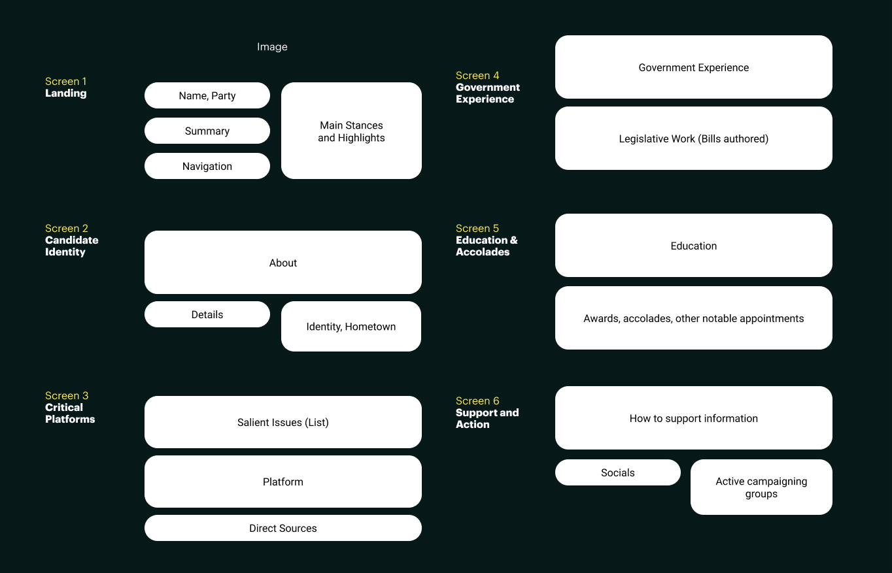 Our draft for organizing the information hierarchy on the pageTo present information effectively, we opted for a website with infographic-like displays highlighting information on our backed candidates.
On first glance, viewers would be able to see candidate stances on critical and timely issues — from lowering the minimum age of criminal responsibility to divorce. Each point would link the user to a relevant article or claim about the chosen information.
We iterated through various layouts and information displays through card sorting and usability tests. From research, we focused on empowering users with information, and highlighting key leanings, deprioritizing meritocratic spaces like education.
Web
Mobile
We set up individual pages for each senatoriable, and used these as gateways to other candidates with adjacent politics. Later on, we expanded with some simple tools: such as a tool to find candidates with politics you were aligned with based on key issues.
Candidate Page
Collating candidate stances was a challenge to standardize, procuring information in general another. Our architecture shifted based on feedback and data
Key metrics
That we looked were time spent on page (the best guess we could have at information digested), clicks to other candidates (are people looking at more of these progerssives that we picked?), and outbound clicks in the "get involved" section (were they potentially finding ways to engage on a deeper level?).
Selecting Candidates
With a tight timeline, we published pages one-by-one, allowing us to stagger promotions and work more effectively. We looked at election updates and coordinated with campaign teams.
Mobile version of the website, with share buttons and hamburger menu 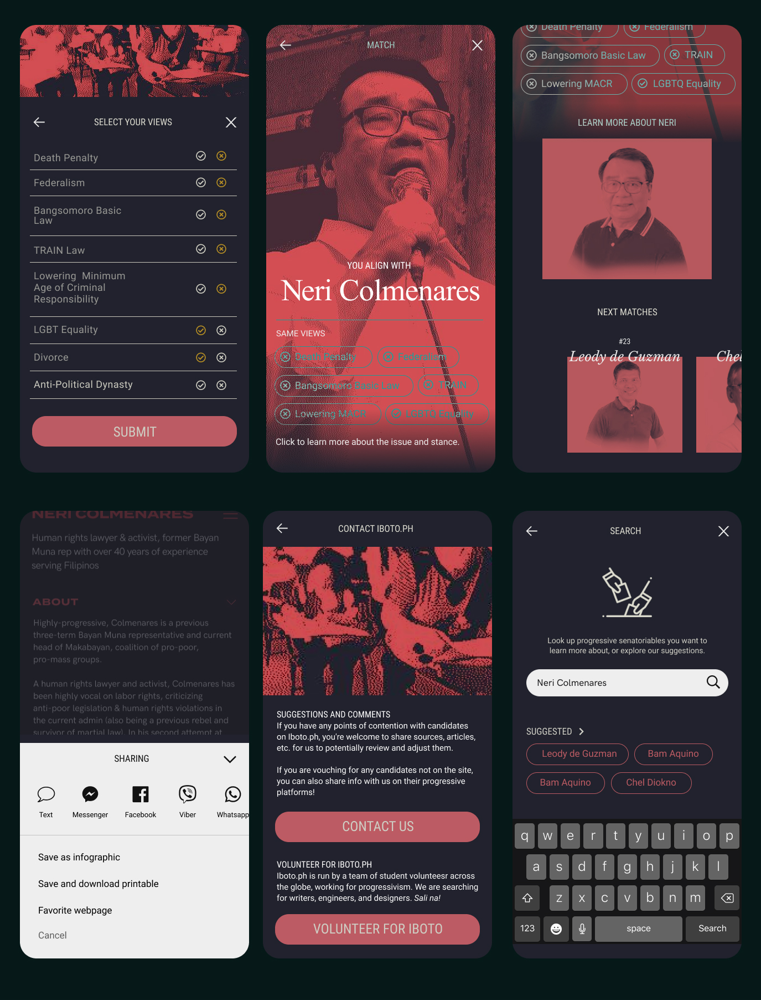
Designing across platforms
Reaching the (social) masses
From here, we focused on extending the platform: creating downloadable posters, PDFs, text-based information sheets, and more to funnel users to our website.
Tracking Iboto.ph Facebook public shares, we noticed usage of our candidate infographics as starting points for discussion, users sharing our links, and the like.
Key metrics
varied per platform, but we valued shares with additional comments/context added on (comments/shares, with captions) and clickthrough-rate to the main Iboto.ph website. Discovery, be it through Iboto.ph's site or socials, were of prime importance to fill in the awareness gap.
Hacking Marketing Templates
 A Google Slides system for our social media managers and content writers
A Google Slides system for our social media managers and content writers
We developed a Google Slides publicity material template (Save > PNG!) that was easily editable and component-based to release any updates on mobilizations, vote counts, anomalies, and the like.
We strategized and quickly launched different campaigns, sourcing user comments, anecdotes, thoughtpieces, and more that our content writers and social media managers led charge on. These were effective funnels into our site and helped grow engagement with unique content from our users.
Designing for free data
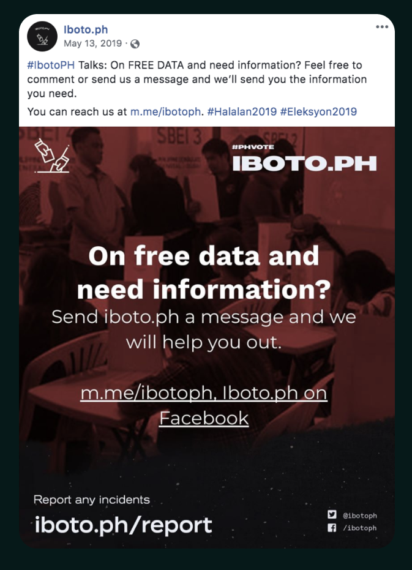While scaling Iboto.ph and iterating through our website and content strategies, we made sure to release descriptive content and make material as accessible as possible for free data/social media light users.
For demographics who weren't able to navigate outside social media platforms without a cost (and didn't intend to pay), we were still able to communicate news and journalism to them—in forms other news channels didn't frequently take on.
Messenger Campaign—since on free data you can't open other links, we provided copy-paste text versions of our candidate pages. We were also in progress of building a Messenger chatbot, but lacked resources.
Rapid Iteration
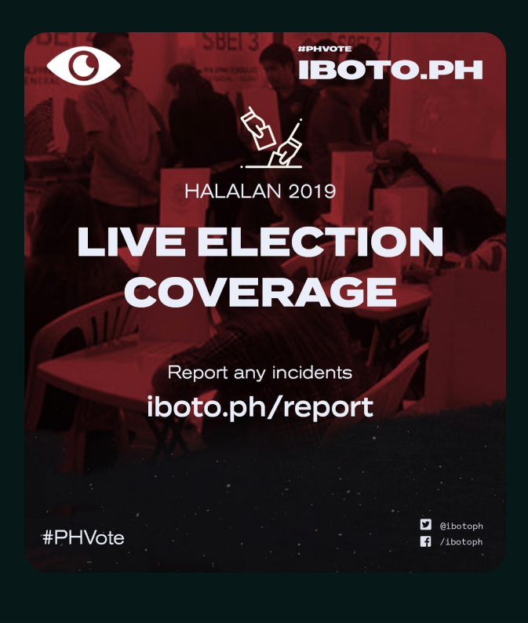 As engagement soared through our social media channels, we were iterating on website and infographic content constantly.
Through usability testing and contextual inquiry sessions done in campuses & remotely, we actively tested interface and layout changes throughout our 3-week release period. In the future, A/B testing hierarchies would be invaluable.
Launching A Journalism Arm
Iboto.ph evolved into a space not only for awareness, but one for activism and exchange. We created a Medium blog, filled in voters via Messenger/Facebook Lite, and continued delivering information from different campaigns to our followers. Entries were written by our team and other one-time contributors, many being students and youth aged 18–30.
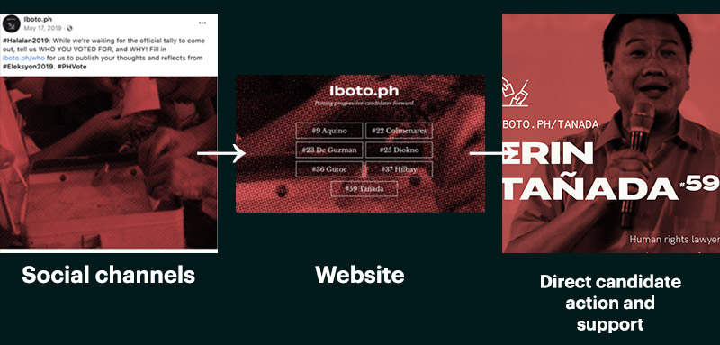
Building a line of action
In our three weeks of refinement, we moved closer to building marketing campaigns that would lead users to our website or directly to more information and action with candidates they're eager to support or learn more about—as reflected in our intentional move towards design-driven promotional efforts.
Results & Reach
Over 500 graphics
disseminated during election season
Over 3 million engaged
Across our website and social platforms.
25 team members
working across the globe
Challenges—The language, presentation, and marketing we would deploy across our social platforms would dictate the initial user attitude to the website. We wanted the candidate pages to be as neutral as possible, serving to inform—this design decision made us put more weight into marketing and methods of dissemination, as well as focusing more on research and information. This was supported by our analytics.
Next Steps
Transforming the digital space in political contexts
Through Iboto.ph, we were astounded not only by the traction and numbers we hit, but by the engagement of the platform. The internet is a tool not maximally used by Philippine candidates: this project we came up with in only three weeks, sometimes doing the barebones work of comprehensively talking about a candidate's platforms, set us up to realize how much more work could be done in the space.
- Building engagement
What's the next step after engagement? We saw lots of users taking steps to volunteer or take action—a key focus area for our next iterations. - Localization for accessibility and language
We're deployed in a country that speaks over 150 languages. English may be an official language, but we're looking to offer localized versions like our competitors. For now, we focused on key points, concise language, and visual indicators. - Nudging users to act
We're looking more intensively on how to bridge the gap between awareness and action, increasing direct action conversions. - Combatting disinformation
A successful space we explored was on-the-spot reporting and journalism: from vote counts to illegal campaigning and fallacious statements. People are always online, and we know they need to be in the know. We're exploring how an update stream can increase engagement while offering another realm of political education.
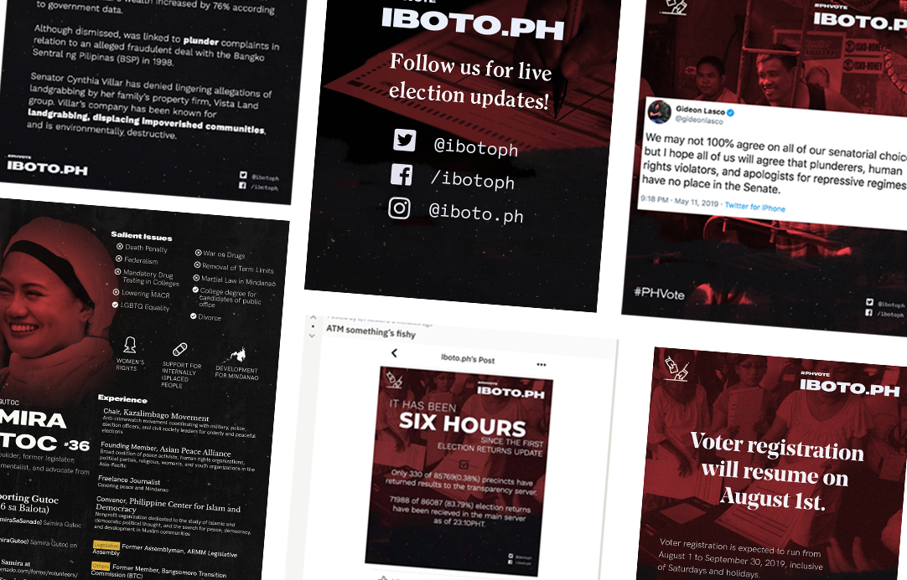
Insights
Conversation as progress
Iboto.ph evolved as a product far beyond our initial product: we wanted to initially build a website that displayed information about each and every candidate. We made an early decision to focus on progressive candidates that then set a new opportunity area: conversation and communication—one that wouldn't have risen in its original form.
The next Philippine elections are happening in 2022. The team behind Iboto.ph is thinking of how to further transform the digital space for education, awareness, and discussion as we did with Iboto.ph.
- Design for untapped desires—finding gaps in voter opinion and using Iboto.ph as a platform to advocate for our candidate slate led to our success. We furthered Iboto.ph's social presence as users moved to use our tools to carry conversations over, and empowered users with our suite of tools.
- Neutrality is not an option—designing to reach those who could change their viewpoints and spread the word to support our candidates was priority—tech is never neutral.
There's value in engaging with the principles that voters believe in, and using those as grounds to understand, listen, and respond effectively. Fighting categorization and labeling through engagement was key, and we're looking forward to more spaces that encourage discussions like this.
Isang boto, isang bayan.
Visit Iboto.ph